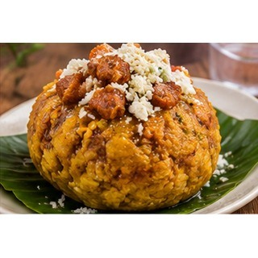

Reseña del cantón
Quevedo es uno de los principales centros urbanos, comerciales y de transporte de la provincia de Los Ríos. Su crecimiento se relaciona con el intercambio de productos agrícolas, entre ellos cacao, banano y otros cultivos de la región. La ciudad reúne mercados, servicios, centros educativos y actividades económicas variadas. También es un punto de conexión con otras localidades de la Costa.
Población
206.008 habitantes (Censo de Población y Vivienda 2022).
Parroquias
Quevedo (cabecera cantonal), San Camilo, San Cristóbal, Venus del Río Quevedo, Nicolás Infante Díaz, 24 de Mayo y Viva Alfaro (urbanas); La Esperanza y San Carlos (rurales).
Economía y cultura
Por su actividad comercial y sus conexiones de transporte, Quevedo atrae visitantes de distintas zonas de la provincia. En sus espacios urbanos conviven mercados, servicios y actividades relacionadas con los productos agrícolas.
Alcalde
Alexis Fernando Matute — período 2023–2027.

Fuente: Directorio oficial de alcaldes y alcaldesas de AME.
Platos típicos
Bolón periqueado, bolón arrecho, fritada y chanfaina.

Estas preparaciones se documentan como parte de la gastronomía local. Su disponibilidad y preparación pueden variar entre comunidades.
Lugares turísticos
Malecón de Quevedo, parques urbanos y riberas del río. Son lugares de encuentro y recreación de la población.
Hoteles y hospedaje: ubicación y direcciones
Estos establecimientos aparecen en directorios públicos y resultados de mapas consultados. Confirma por teléfono que sigan operando, sus tarifas y disponibilidad antes de viajar.
- Bravo Grand Hotel
Dirección o referencia: Diagonal gasolinera Terpel, parroquia 7 de Octubre, Av. Walter Andrade entre Tercera y Cuarta, Quevedo.
Ver ubicación y cómo llegar en Google Maps - Hotel del Río
Dirección o referencia: Calle 23ava, Quevedo, Los Ríos.
Ver ubicación y cómo llegar en Google Maps - Hotel Olímpico
Dirección o referencia: Sector Ciudadela San José, referencia XG8J+7M6, Quevedo.
Ver ubicación y cómo llegar en Google Maps - Hotel Palmar del Sol
Dirección o referencia: Km 5, vía Quevedo–El Empalme, Quevedo.
Ver ubicación y cómo llegar en Google Maps - Hostería Aroma de Cacao
Dirección o referencia: Avenida entre Décima y Décima Primera, centro de Quevedo.
Ver ubicación y cómo llegar en Google Maps
Mapa del cantón
Mapa de Google Maps centrado en el cantón: